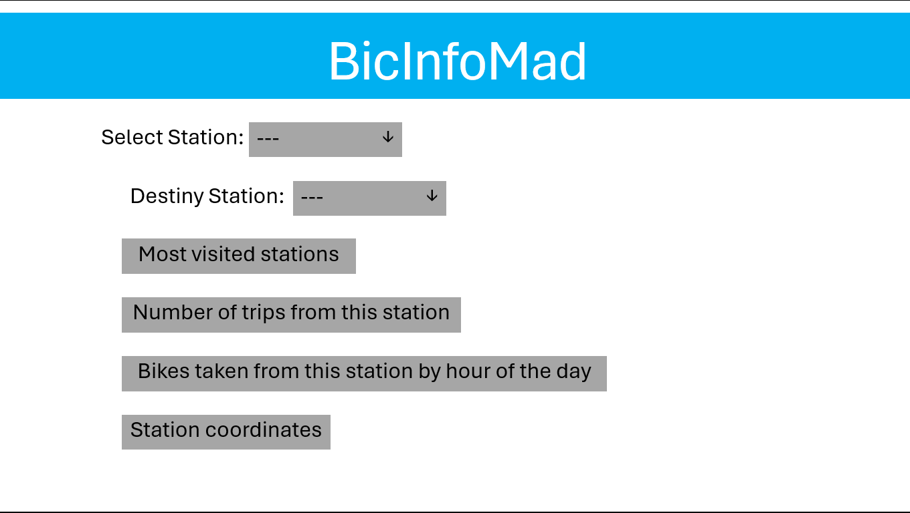

This project aims to analyze and visualize the usage patterns of the bicycle-sharing system in Madrid, leveraging various datasets to gain insights into user behavior, station performance, and overall system efficiency.
This is a simple mockup to show the main interface for this project.
